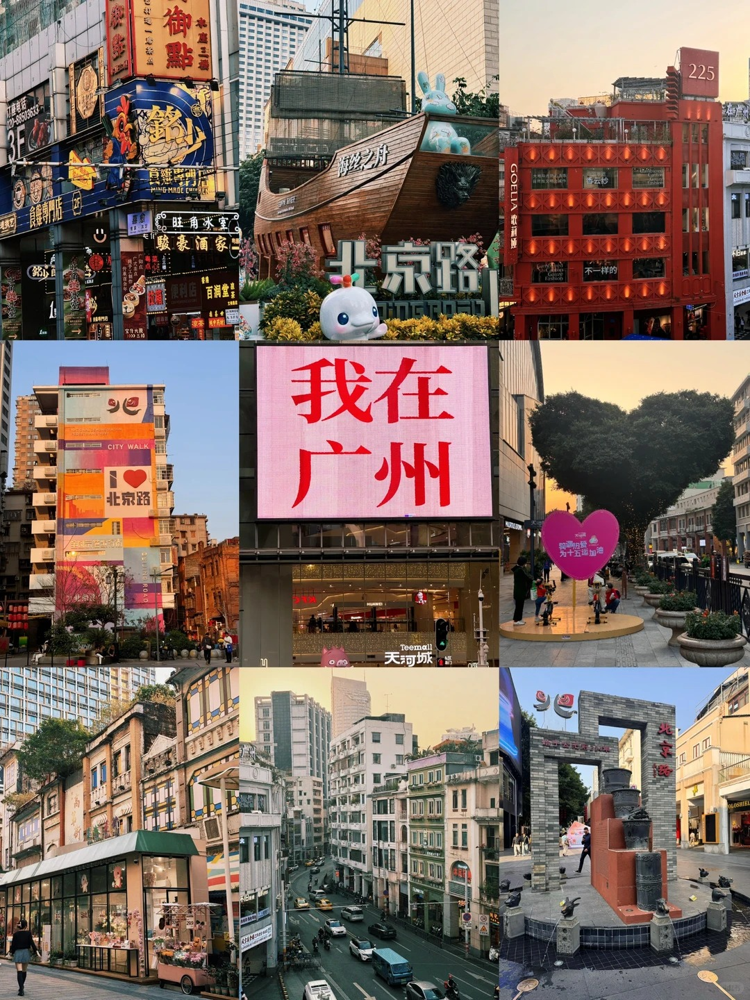

The City of Flowers & Timeless Lingnan Culture
Guangzhou, historically known as Canton, is the capital of Guangdong Province. With a history stretching back over 2,200 years, it has served as a major terminus of the maritime Silk Road and continues to be a global trading hub today.
Celebrated globally as the "City of Flowers," Guangzhou boasts a vibrant lifestyle where you can find blooming flora all year round, stunning modern skylines juxtaposed with historical colonial villas, and deeply rooted traditions.

Discover the iconic landmarks that seamlessly blend Guangzhou's historical charm with its breathtaking modern skyline.
"Eating in Guangzhou" - Welcome to a true paradise for food lovers. Discover the authentic flavors that define Cantonese cuisine.
Guangzhou is the vibrant cradle of Lingnan Culture, heavily characterized by its openness, pragmatism, and distinct aesthetic traditions.
Recognized as a UNESCO intangible cultural heritage, it wonderfully merges music, martial arts, acrobatics, and acting into a dramatic art form.
Features deeply distinctive arcades (Qilou), wok-handle roofs, and intricate brick carvings successfully adapted to the subtropical climate.
A revolutionary art movement originating here that elegantly blended traditional Chinese techniques with distinct Western perspectives.
A highly connected city tailored for seamless travel.
One of the world's most extensive subway networks seamlessly connecting all major tourist spots, train stations, and airports together.
Guangzhou South Railway Station is a major national hub, linking you directly to Hong Kong in under an hour and across China rapidly.
A leading world-class international aviation hub offering extensive global and domestic flight connections successfully around the clock.